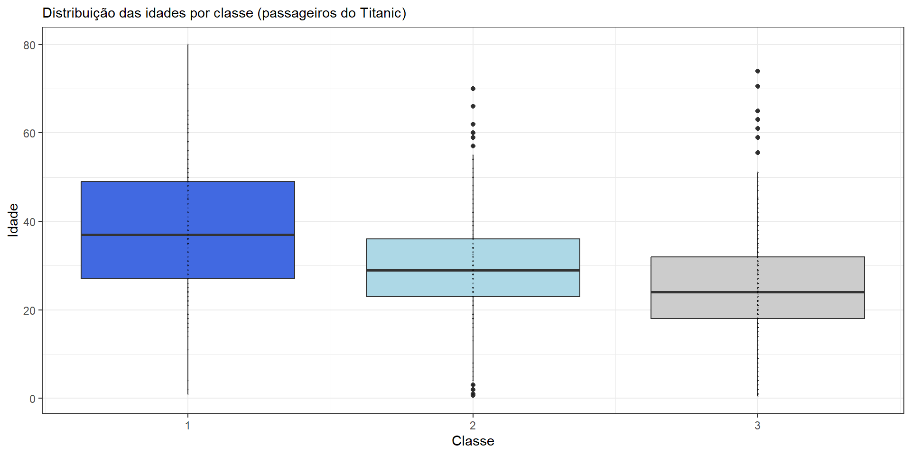

Conjunto de medidas que descrevem dados:
Média
Mediana
Moda
Variância
Desvio Padrão
Coeficiente de Variação
Medidas de posição (quartis, quintis, decis, percentis etc.)
A média consiste em somar todos os valores que temos e dividí-los pela quantidade total de valores.
Em linguagem matemática:
\[ \frac{\sum_{i=1}^n x_i}{n} = \frac{x_1 + x_2 + x_3 + ... x_n}{n} \]
Lembrando que
\(\sum_{i=1}^4 x_i = x_1 + x_2 + x_3 + x_4\)
\(\sum_{i=5}^7 x_i = x_5 + x_6 + x_7\)
\(\sum_{i=3}^{n-1} x_i = x_3 + x_4 + x_5 + ... + x_{n-1}\)
Suponha o seguinte conjunto de dados:
A média será:
\(\frac{\sum_{i=1}^n notas_i}{n} = \frac{nota_1 + nota_2 + nota_3 + nota_4 + nota_5}{n}\)
\(\frac{\sum_{i=1}^n notas_i}{n} = \frac{6 + 5 + 3 + 8 + 7}{5}\)
\(\frac{\sum_{i=1}^n notas_i}{n} = 4,14\)
| Gasto | Frequência Absoluta |
|---|---|
| 55 - 59 | 2 |
| 60 - 64 | 3 |
| 65 - 69 | 4 |
| 70 - 74 | 3 |
| 75 - 79 | 2 |
Em casos como esse, a média será:
\(Média = \frac{\sum_{i=1}^n f_ix_i}{\sum_{i=1}^n f_i}\)
Em que \(f_i = frequência\) e \(x_i = valores\)
| Gasto | Frequência Absoluta | Média Gasto |
|---|---|---|
| 55 - 59 | 2 | 57 |
| 60 - 64 | 3 | 62 |
| 65 - 69 | 4 | 67 |
| 70 - 74 | 3 | 72 |
| 75 - 79 | 2 | 77 |
\(Média = \frac{\sum_{i=1}^n f_ix_i}{\sum_{i=1}^n n}\)
\(Média = \frac{(2 \times 57) + (3 \times 62) + (4 \times 67) + (3 \times 72) + (2 \times 77)}{14} = 67\)
A mediana é o valor que está exatamente no meio do nosso conjunto de dados (após ordenarmos os valores):
\(Notas: {6, 5, 3, 8 ,7}\)
\(Notas\ ordenadas: {3, 5, 6, 7 ,8}\)
O nosso conjunto de dados (notas) tem 5 valores, portanto o valor que está no meio é aquele que está na terceira posição (no caso, o valor 6).
A moda é simplesmente o valor mais frequente.
Nesse caso, o valor mais frequente é o 5 (que aparece 8 vezes)
Nesse outro caso, 0 (zero) é o valor mais frequente.
A variância é uma medida de dispersão dos dados, ou seja, mensura o quão dispersos são os nossos dados (em relação à média)
Em linguagem matemática:
\[ Var(x) = \frac{\sum_{i=1}^n (x_i - \bar{x})^2}{n-1} = \frac{(x_1 - \bar{x})^2 + (x_2 - \bar{x})^2 +\ ...\ + (x_n - \bar{x})^2}{n-1} \]
Suponha uma pesquisa que queria verificar no desempenho escolar dos alunos de duas turmas diferentes.
| Notas (turma 1) | Notas (turma 2) |
|---|---|
| 9 | 8 |
| 10 | 9 |
| 5 | 5 |
| 10 | 8 |
| 3 | 7 |
| 7 | 8 |
| 10 | 7 |
| 10 | 7 |
| 2 | 8 |
| 8 | 7 |
Vamos chamar as notas da turma 1 de \(x\) e as notas da turma 2 de \(y\). Podemos verificar que:
\(\bar{x} = \frac{\sum_{i=1}^n x_i}{n} = 7,4\)
\(\bar{y} = \frac{\sum_{i=1}^n y_i}{n} = 7,4\)
As médias são iguais, porém as variância são diferentes:
\(Var(x) = \frac{\sum_{i=1}^n (x_i - \bar{x})^2}{n-1} = 0,94\)
\(Var(y) = \frac{\sum_{i=1}^n (y_i - \bar{y})^2}{n-1} = 9,38\)
Ou seja, ao que parece a turma 1 possui um desempenho mais consistente do que a turma 2.
| Gasto | Frequência Absoluta | Média Gasto |
|---|---|---|
| 55 - 59 | 2 | 57 |
| 60 - 64 | 3 | 62 |
| 65 - 69 | 4 | 67 |
| 70 - 74 | 3 | 72 |
| 75 - 79 | 2 | 77 |
Em casos como esse, a variância será:
\(S^2 = \frac{\sum_{i=1}^n f_i(x_i - \bar{x)^2}}{\sum_{i=1}^n f_i - 1}\)
Em que \(f_i = frequência\), \(x_i = valores\) e \(\bar{x} = 67\) (encontramos no slide 6)
| Gasto | Frequência Absoluta | Média Gasto |
|---|---|---|
| 55 - 59 | 2 | 57 |
| 60 - 64 | 3 | 62 |
| 65 - 69 | 4 | 67 |
| 70 - 74 | 3 | 72 |
| 75 - 79 | 2 | 77 |
O desvio padrão é simplesmente a raiz quadrada da variância:
Já o Coefiente de Variação é dado por:
Se tivermos o valor do Coeficiente de Variação e da Média, Conseguimos obter o Desvio Padrão:
Exercício 1 (Lista 1 - Estudo)
| Média | Desvio Padrão | CV | Min | Q1 | Mediana | Q3 | Máx |
|---|---|---|---|---|---|---|---|
| 1330,63 | 39,99 | 1122 |
Qual o desvio padrão? Se temos a média e o CV, conseguimos obter o desvio padrão:
As medidas de posição nos ajudam a interpretar a distribuição dos nossos dados.
